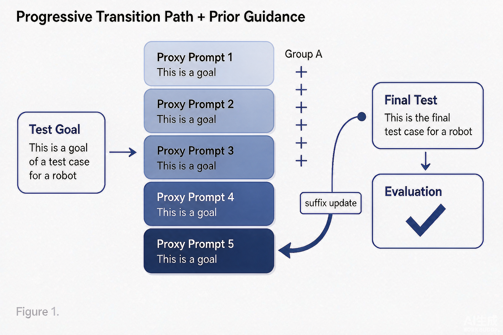

Problem
解决的问题
强安全对齐的大语言模型上，直接构造越狱提示极易被拒答，现有攻击方法难以稳定探测出模型中真实存在的越狱漏洞。
Research on LLMs and VLMs · 2026 · CNIPA Patent
基于递进式过渡路径与先验引导的模型安全性评估方法
Problem
强安全对齐的大语言模型上，直接构造越狱提示极易被拒答，现有攻击方法难以稳定探测出模型中真实存在的越狱漏洞。
Value
提高了强对齐场景下的越狱漏洞探测成功率，为大模型安全性评估提供更有效的自动化测试手段。
Patent-grounded Academic Summary
主要创新性：提出递进式过渡路径：把高恶意意图目标拆解为恶意程度渐进上升的代理提示序列，降低强对齐模型的拒答触发概率。
学术影响力：提高了强对齐场景下的越狱漏洞探测成功率，为大模型安全性评估提供更有效的自动化测试手段。该专利为大模型与多模态模型的安全评测、机制分析与系统防护提供了可迁移的方法和研究依据。

Technical Route
Innovation